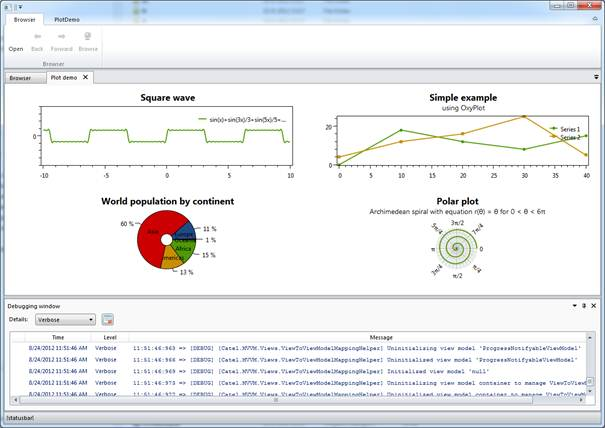

Orchestra is a composable shell that allows developers to skip the process of writing a custom framework for every application they have to write. This way it is possible to focus on the actual business problem that needs to be solved instead of writing a framework again and again.
The biggest advantage is that the core is maintained by open-source developers so you will get improvements and new features by simply updating to a new version.
Orchestra uses several well-known external libraries to make sure it can provide the quality expected from such a framework:
Orchestra consists of a main shell including an SDK with services that allows developers to communicate with the shell. Developers can write their own modules which implement the actual functionality of their application. These modules can communicate with the shell, but also with each other through the services that are offered out of the box.